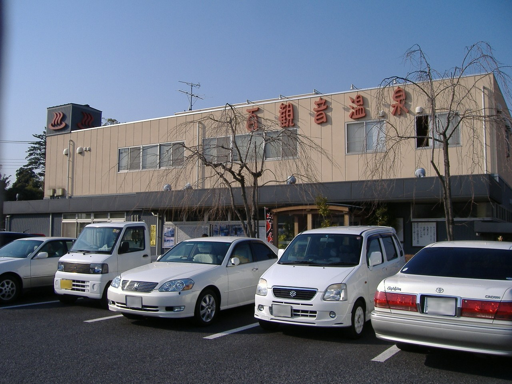

쇼지마 온천 유라쿠노사토 (昭和島温泉 ゆらくの里)
★ 평점: 4 / 5.0 (1551 리뷰)

📖 시설 소개 및 상세 설명
아키시마에 자리한 천연 온천 명소 '쇼지마 온천 유라쿠노사토'은(는) 바쁜 일상에서 벗어나 여유로운 힐링을 즐길 수 있는 공간입니다. 특히 지하 1,800m 온천, 츠볼유·네유 등 노천탕, 컷살론도 있는 대형시설 등 방문객의 눈길을 사로잡는 차별화된 매력을 갖추고 있어 지역 주민과 여행객 모두에게 사랑받고 있습니다. 깨끗하게 유지되는 시설과 아늑한 분위기, 따뜻한 환대가 어우러져 처음 방문하는 분들도 일본 전통 온천 및 센토 문화의 진수를 편안하게 만끽할 수 있습니다.
이곳의 자랑인 온천수는 지하 305m에서 공급되는 단순 온천(저온)을(를) 사용하며, 약 48℃의 최적 온도에서 몸의 긴장을 부드럽게 풀어줍니다. 물에 풍부하게 담긴 성분들은 혈액순환 개선, 소화불량 개선, 불면증 완화, 관절통 등에 탁월한 도움을 주어 입욕 후 오랫동안 몸이 따뜻하고 개운함이 지속됩니다. 특히 야외의 맑은 공기와 풍경을 감상하며 탕에 몸을 담글 수 있는 노천탕은 도심 속 휴양지에 온 듯한 탁 트인 해방감과 깊은 힐링을 선사합니다.
목욕을 마친 이후에도 여유로운 여가 시간을 즐길 수 있도록 이용객의 편의를 고려한 다채로운 시설이 준비되어 있습니다. 넓고 쾌적한 휴게 공간을 비롯해 정갈한 식사를 즐길 수 있는 식당, 만화 및 휴식 코너가 마련되어 있어 가족이나 친구, 연인, 혼자 방문한 여행객 모두가 시간 가는 줄 모르고 편안하게 머무를 수 있습니다. 도쿄 여행 일정이나 바쁜 업무 후 몸과 마음을 새롭게 리프레시할 수 있는 최적의 명소, '쇼지마 온천 유라쿠노사토'에서 특별하고 따뜻한 온천욕의 추억을 만들어 보시기 바랍니다.